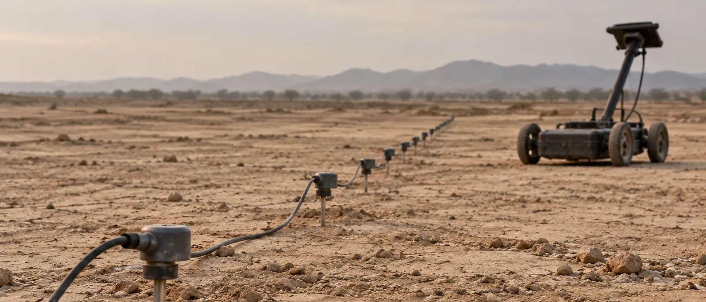

Geotechnical vs Geophysical Investigation
Direct sampling or non-invasive imaging? How the two approaches differ, what each can and cannot tell you, and why the strongest investigations often use both.

Two ways to see the ground
A geotechnical investigation looks at the ground directly: it drills, samples and tests. A geophysical investigation looks at it indirectly: it measures how the ground responds to waves, currents or radar and infers what lies below. One gives direct observations at the investigation locations; the other gives indirect coverage along a line or across an area, which has to be interpreted.
Neither replaces the other. The question on most sites is not which one to use, but how much of each, and in what order.
What a geotechnical investigation gives you
Boreholes and trial pits put the soil and rock in your hands. Samples go to the laboratory for classification, strength and compressibility; in-situ tests such as the SPT measure resistance at each depth; groundwater is observed directly. These are the numbers foundation design is built on.
The limitation is coverage. A borehole is perhaps 150 mm wide. Everything between two boreholes is interpolated, and on variable ground that interpolation can be wrong.
What geophysics gives you
Geophysical methods measure a physical property continuously. Seismic methods such as refraction and MASW measure wave velocity, which follows the stiffness of the ground. Electrical resistivity follows moisture, clay content and weathering. Ground penetrating radar picks up shallow layers, voids and buried services.
The result is a section or a map, not a sample. It is an interpretation: the same velocity or resistivity can fit more than one ground condition. Before it is relied on, the interpretation has to be calibrated against direct investigation, the boreholes, pits and tests that show what the ground actually is.
The ground between boreholes
The figure below shows a common case. Three boreholes find rock at similar depths, so a straight line is drawn between them. A seismic line along the same section suggests what the boreholes missed.
Boreholes only. Rock at 8 to 9 m in all three holes, so the rock surface is drawn level. A pile design on this section would assume short piles everywhere.With a seismic line. The velocity section suggests a weathered channel between BH-2 and BH-3, where rock may drop to about 17 m. A borehole in the channel is needed to confirm it before piles are designed.
Boreholes show what the ground is where they are drilled. Geophysics suggests where it changes in between.
Side by side
| Geotechnical | Geophysical | |
|---|---|---|
| How it works | Drilling, sampling and in-situ testing | Measuring the ground’s response to waves, current or radar |
| Coverage | Points, at each borehole or pit | Continuous lines or areas |
| Output | Samples, test values, strata logs | Sections and maps of a physical property |
| Design parameters | Directly, from tests | Some directly (for example shear-wave velocity), most by correlation |
| Best for | Foundation design values, groundwater, classification | Rock profile, variability, voids, services, seismic site class |
Using both
On larger or variable sites, the efficient order is often geophysics first, then targeted boreholes. The survey shows where conditions change; the boreholes go where they will answer the most questions, and calibrate the survey so it can be trusted across the rest of the site.
Typical cases where geophysics earns its place: long linear projects such as roads and pipelines, sites with suspected cavities or old fill, solar parks where rock depth controls pile length across a large area, and seismic design that needs shear-wave velocity.
Key takeaways
- Geotechnical investigation gives direct observations at points; geophysics gives indirect coverage between them.
- Geophysics indicates where conditions may change; boreholes confirm what they are.
- Calibrate every geophysical section against borehole data.
- On large or variable sites, survey first and target the boreholes.